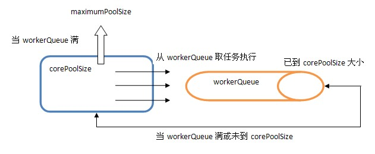

ThreadPoolExecutor运转机制详解
2014-11-22 10:48:00 by suphyThreadPoolExecutor运转机制详解
@(Java)[Thread|ThreadPool]
先看一下新建一个ThreadPoolExecutor的构建参数:
public ThreadPoolExecutor(int corePoolSize,
int maximumPoolSize,
long keepAliveTime,
TimeUnit unit,
BlockingQueue<Runnable> workQueue,
ThreadFactory threadFactory,
RejectedExecutionHandler handler)
具体流程如下：
-
当池子大小小于corePoolSize就新建线程，并处理请求
-
当池子大小等于corePoolSize，把请求放入workQueue中，池子里的空闲线程就去从workQueue中取任务并处理
-
当workQueue放不下新入的任务时，新建线程入池，并处理请求，如果池子大小撑到了maximumPoolSize就用RejectedExecutionHandler来做拒绝处理
-
另外，当池子的线程数大于corePoolSize的时候，多余的线程会等待keepAliveTime长的时间，如果无请求可处理就自行销毁
内部结构如下所示：

从中可以发现ThreadPoolExecutor就是依靠BlockingQueue的阻塞机制来维持线程池，当池子里的线程无事可干的时候就通过workQueue.take()阻塞住。
Executors类使用ExecutorService提供了一个 ThreadPoolExecutor的简单实现，但 ThreadPoolExecutor 提供的功能远不止这些。我们可以指定创建 ThreadPoolExecutor 实例时活跃的线程数，并且可以限制线程池的大小，还可以创建自己的 RejectedExecutionHandler 实现来处理不适合放在工作队列里的任务.
其实可以通过Executors来学学几种特殊的ThreadPoolExecutor是如何构建的。
public class Executors {
public static ExecutorService newFixedThreadPool(int nThreads) {
return new ThreadPoolExecutor(nThreads, nThreads,
0L, TimeUnit.MILLISECONDS,
new LinkedBlockingQueue<Runnable>());
}
public static ExecutorService newFixedThreadPool(int nThreads, ThreadFactory threadFactory){}
public static ExecutorService newSingleThreadExecutor() {}
public static ExecutorService newCachedThreadPool() {
return new ThreadPoolExecutor(0, Integer.MAX_VALUE,
60L, TimeUnit.SECONDS,
new SynchronousQueue<Runnable>());
}
}
newFixedThreadPool就是一个固定大小的ThreadPool.
newCachedThreadPool比较适合没有固定大小并且比较快速就能完成的小任务，没必要维持一个Pool，这比直接new Thread来处理的好处是能在60秒内重用已创建的线程。
其他类型的ThreadPool看看构建参数再结合上面所说的特性就大致知道它的特性